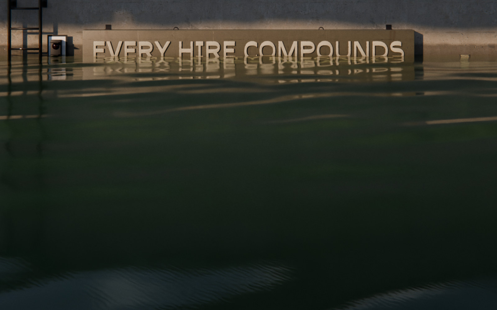

Scaling Up‑Side‑Down
The book
SUSD Bootloader
Get it free
capacity
Real scaling is cyclical.
Up
Up for growth.
Side
Side for stability.
Systems absorb the growth, structure stabilizes
Down
Down for pruning.
Systems were what actually held the weight.